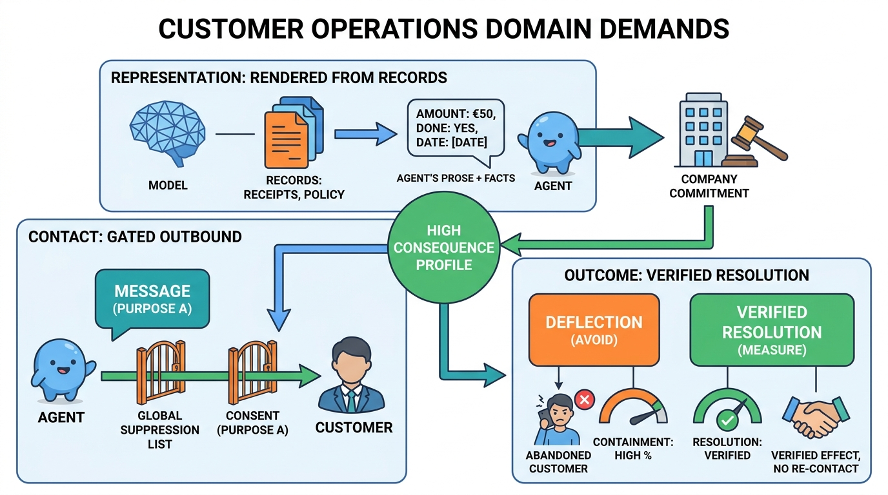

Part XI — DOMAINS: How Requirements Change Across Domains
Customer Operations: Support, Sales and Marketing Agents
AI-assisted: written with Claude Code, images generated with the Gemini API. How this works

Image generated by Google Gemini (gemini-3-pro-image-preview)